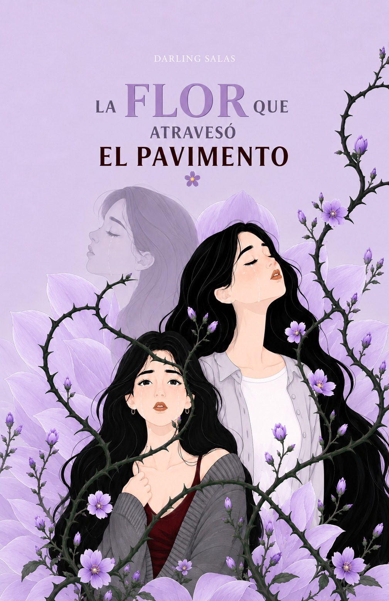
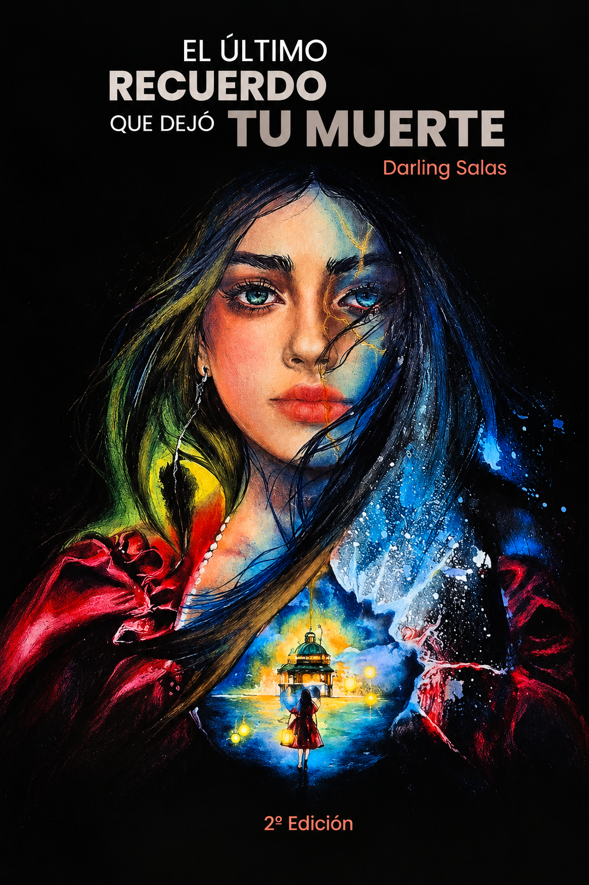
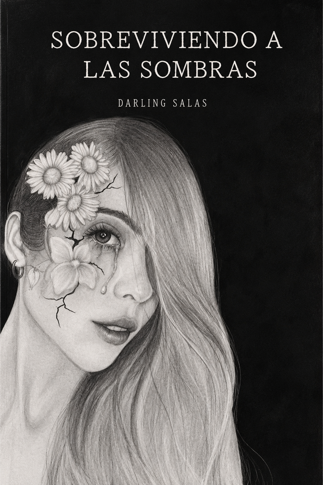
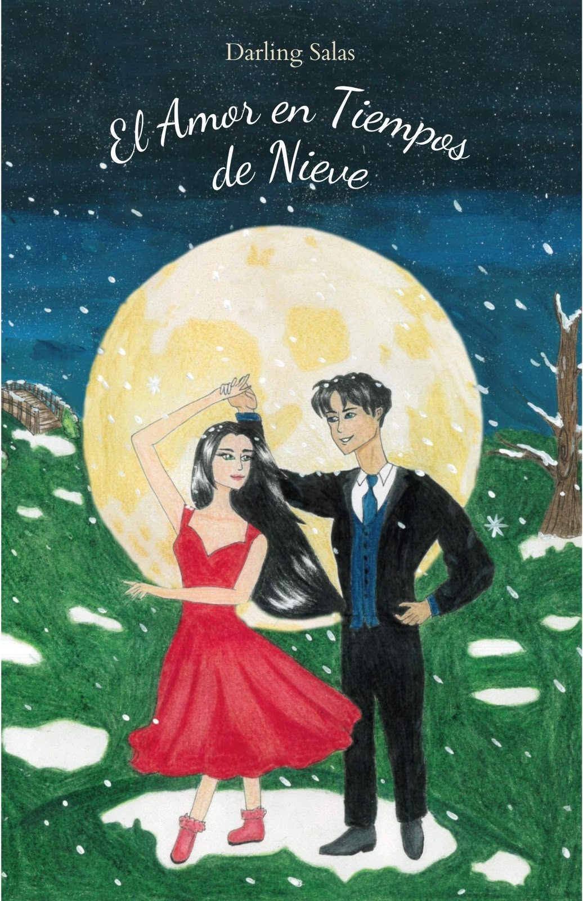

Hay despedidas que nos rompen para siempre.
Desliza para entrar{{ wordLine }}
«No importa qué tan rotos estemos, aquella esperanza que parece perdida volverá a aparecer, como la semilla que se perdió en el pavimento y nadie la encontró, y nadie la vio hasta que florecio...»
Memoria, duelo y la decisión de volver a florecer en los lugares donde nadie esperaba vida.

«Solo quien ha vivido el amargo dolor que deja una muerte, entiende que nunca nada vuelve a ser igual...ni siquiera uno.»
Un libro sobre el duelo, las despedidas que no se dijeron y lo que permanece de quien ya no está.


«La despedida dolió, pero lo que vino después me destruyó».

Una autora que encontró en las palabras una forma de quedarse cerca de lo que alguna vez perdió.
Darling Salas escribe sobre el duelo, las ausencias, la memoria, el amor y la reconstrucción. Sus obra nacen de una mirada íntima hacia aquello que nos atraviesa y permanece incluso después de que una historia termina.